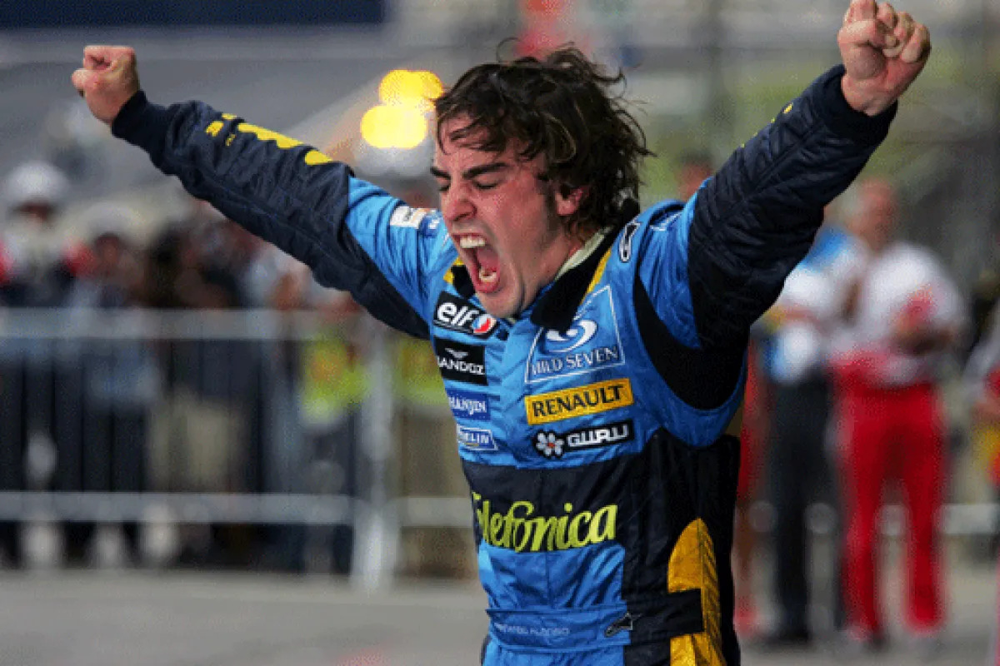
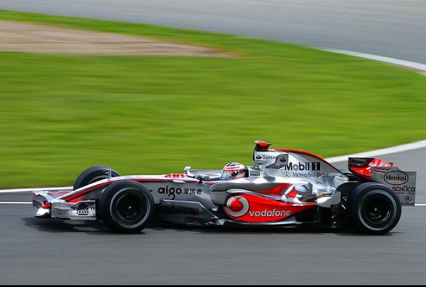
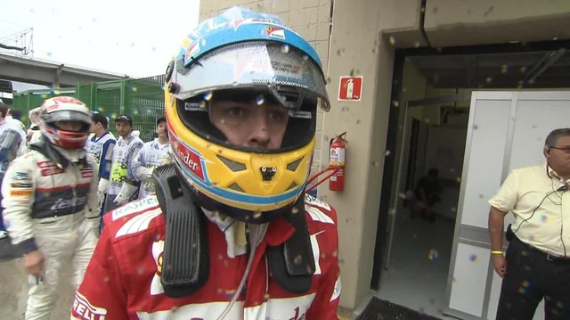
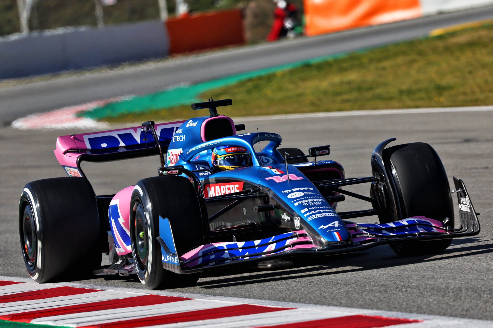
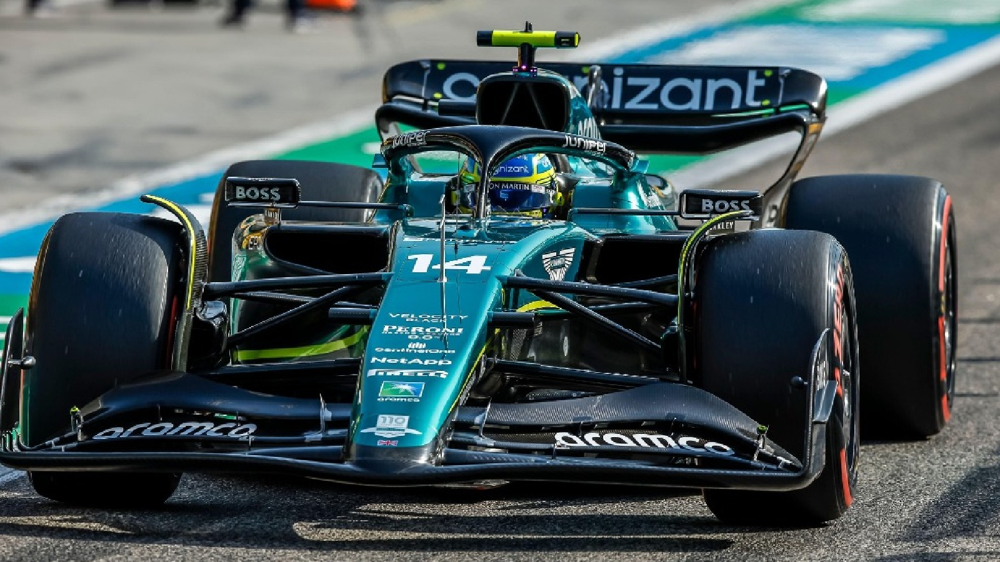

Equipes e Trajetória na Fórmula 1
Minardi (2001)
Estreia na F1.
Carro limitado, mas Alonso chamou atenção pelo talento natural.

Renault (2003–2006, 2008–2009)
Foi na Renault que Alonso viveu seus maiores momentos:
Campeão Mundial de 2005 e 2006.
Quebrou a hegemonia de Michael Schumacher.
Tornou-se o campeão mais jovem da história até então.

McLaren (2007, 2015-2018)
Em 2007, viveu uma temporada marcada por tensões com o novato Lewis Hamilton.
Saiu após apenas um ano.
Retornou em parceria com a Honda em 2015–2018 (como McLaren-Honda), sofrendo com carros pouco competitivos.

Ferrari (2010–2014)
Vice-campeão em 2010, 2012 e 2013.
Considerado por muitos o período em que Alonso pilotou no auge.
Chegou muito perto do tricampeonato.

Alpine (2021–2022)
Retorno à equipe que o consagrou (ex-Renault).
Participou do desenvolvimento para novos regulamentos.

Aston Martin (2023–Presente)
Surpreendeu o mundo com um pódio logo na estreia.
Marcou o ressurgimento competitivo do piloto após anos de carros fracos.
